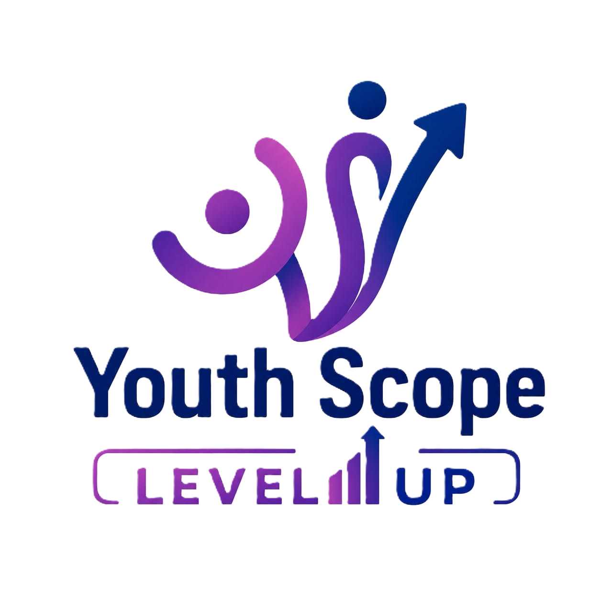

SCHEDULE
Speaker: Youth Scope Team
Explore how HR is evolving, the skills employers are looking for, and how to stand out in today's job market.
Speaker: Amany Helmy
Discover the latest digital marketing trends, strategies, and tools that help brands grow and connect with their audiences.
Speaker: Mina Mamdouh
An inspiring journey filled with lessons, challenges, and experiences that motivate you to take the first step toward your goals.
Speaker: Fatma Youssef (Founder of Fati's)
Industry experts discuss the realities of project management, career opportunities, and the skills needed to lead successful teams.
Moderator: Mesk Wahdan
Speakers: Mahmoud Ahmed El-Fakharany, Hisham Atef
Learn how data analysis is transforming businesses and why analytical thinking has become one of the most valuable skills today.
Speaker: Ahmed Ali
A conversation about maintaining mental well-being, overcoming challenges, and achieving a healthy balance in both personal and professional life.
Moderator: Dr.Mahmoud Bassiony
Speakers: Emad Rashad, Mostafa El Nahas
An inspiring story about creativity, persistence, and building a successful journey from passion to impact.
Speaker: Marin & Mario (Founders of Nancy Bakes)
Explore how Gen Z creators are redefining content, influencing trends, building authentic communities, and creating opportunities in today's fast-paced digital world.
Moderator: Ziad Saeed
Speakers: Ahmed Bahaa, Youssef Walid
A practical talk on how students and fresh graduates can use LinkedIn to showcase their skills, expand their network, and stand out in today's competitive job market.
Speaker: Ayman El Sherbiny
As the world of finance continues to evolve, Gen Z is redefining the way we think about money, success, and wealth creation. This interactive session explores how the new generation approaches financial decisions — from managing income and saving, to investing and building new sources of income.
Speaker: Mohamed Negm
Entrepreneurship is no longer limited to experienced professionals, today’s students have the opportunity to turn ideas into real businesses and create impact from an early stage. This session explores the mindset, skills, and experiences behind successful entrepreneurship, helping students understand how to identify opportunities, solve real problems, build innovative ideas, and take the first steps toward launching their own startups.
Speaker: Omar Samy
Through real-life stories and experiences, Walid El Sisi shares how the choices we make can define our future, highlighting the importance of awareness, responsibility, and making the right decisions in life.
Speaker: Walid El Sisi
Description: An engaging talk on the power of curiosity, continuous learning, and thinking differently in a fast-changing world.
Speakers: Ahmed El Ghandour (El Da7ee7)
Speaker: Youth Scope Team